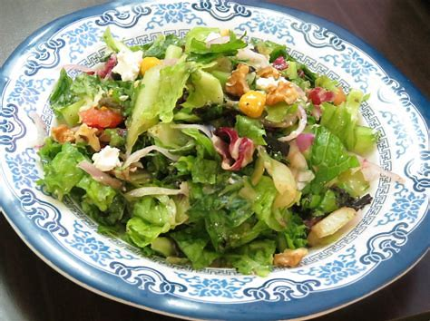

How to Make a Perfect Green Salad
On this short webpage, you will learn how to make a tasty green salad for a family of 5!

Ingredients
- One apple
- Two peppers
- 300 grams of field greens and baby spinach
- 50 grams of pine nuts
- 75 ml of extra vergin olive oil
- 50 ml of balsamic vinegar
- One mango
- One onion
- Three carrots
- One cucumber
Steps to make the salad
- Put the pine nuts in a toaster for about three minutes. Make sure they turn golden brown.
- Cut up the apple into small bite size pieces and add it into a big bowl.
- Remove the seeds from the peppers then dice them up into pieces that are slightly bigger than the apples and add the peppers into the bowl.
- Take the field greens and baby spinach and add it into the bowl.
- Add the golden brown pine nuts to the bowl as well.
- Cut up the mango into pieces that are 1 ½ cm 3 and add it into the bowl.
- Slice the onions into pieces that are 15 cm long and add it into the bowl.
- Cut the carrots into cubes that are 1 cm 3 and add it into the bowl.
- Cut the cucumbers horizontally into circles that are no thicker than ½ cm and add it into the bowl.
- Add the olive oil to the salad into the bowl.
- Add the balsamic vinegar to the bowl as well.
- Finally, use salad tongs to mix all the ingredients together.
Enjoy!